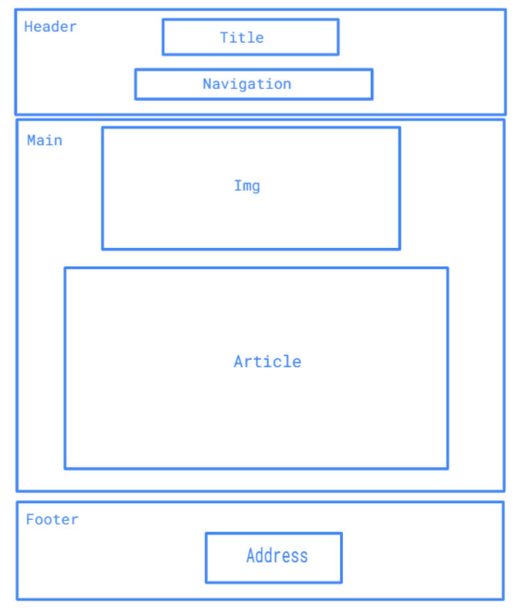

Preparations
Before making the website, I read the feedback from my first my first delivery of this project. I learned that I hadn't brought everything I needed. So that's why I chose to define the design needs before hand. I found that I needed 5 different pages, so the pages being the same would be the easiest for me and the reader. I used a navigation. For it, I chose to collect examples of how I could create a navigation. I got inspiration from w3schools and followed the tutorials from the site to make a rough example. After that i started to write the text i needed for the project. Then i started working on the main website. I chose to use different types of h1 h2 headings to create separation in the text. This made it easier to make the page clear, but at the same time give the reader an understanding of more important information from the others. I chose to have a picture before the text because I wanted the reader to be introduced to what I was going to talk about. Another thing was that I chose navigation at the very top, so it was easier for the reader to choose where they wanted to choose. I chose to use the same navigation on all pages, so it was easier for the reader to use the website and the various pages had similarities.